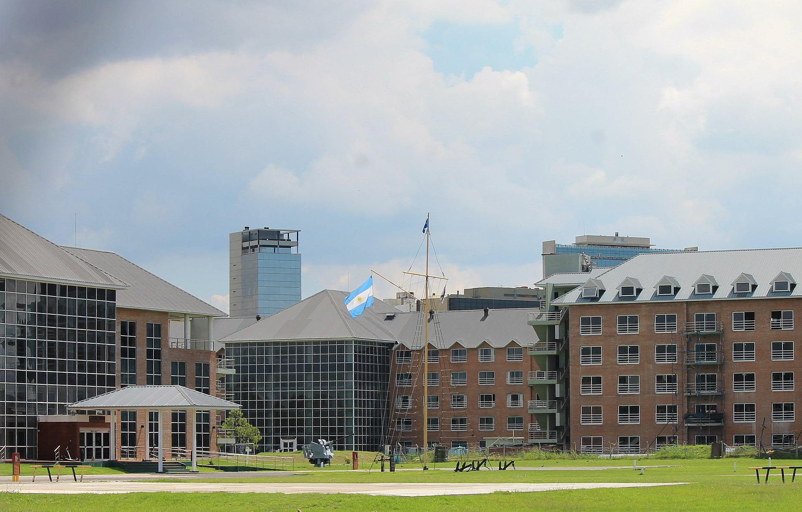

Vicente López ofrece una amplia variedad de actividades culturales, incluyendo teatros, centros culturales y eventos al aire libre. Durante el año se organizan ferias, recitales y festivales que atraen tanto a vecinos como a visitantes.
🏠 Barrios
Vicente López está compuesto por varios barrios, entre ellos:
- Olivos
- Florida
- La Lucila
- Munro
- Carapachay
- Villa Martelli
Cada uno tiene su propia identidad, combinando zonas residenciales, comerciales e industriales.
